Alternative option using Stubbing ¶
This section demonstrates the process of using the HAL1 detection script with the stubbing option to identify and migrate HAL1 references within the application code of the provided examples.
It covers the steps from script execution to log analysis and the subsequent refactoring of HAL1 references based on the HAL1 to HAL2 migration guidelines.
The HAL1 detection script with the stubbing option is designed to automate the process of identifying and optionally stubbing HAL modules within source files.
Execute the automatic detection script with the Stubbing option ¶
-
Change the working directory to
migration_toolsunderstm32h7pxx_drivers. -
Execute the HAL1 detection script with the stubbing option using the command line:
“Git Bash” terminal
./hal1_detection.exe -psrc "$YOUR_PROJECT_PATH$" -d stub -m all
“Command Prompt” terminal
hal1_detection.exe -psrc "$YOUR_PROJECT_PATH$" -d stub -m all
For the following example :
-
To execute the HAL1 detection script with the stubbing option :
./hal1_detection.exe -psrc "C:\ST\STM32Cube_SW_Package_H7P_2.0.0\examples\hal\adc\ADC_SingleConversion_TriggerSW_DMA" -d stub -m all

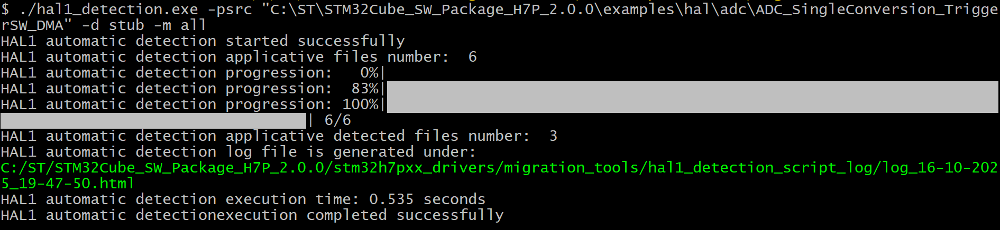
or
hal1_detection.exe -psrc "C:\ST\STM32Cube_SW_Package_H7P_2.0.0\examples\hal\adc\ADC_SingleConversion_TriggerSW_DMA" -d stub -m all

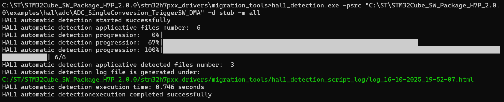
Note
Use the default configuration defined in the
hal1_detection_config.py
file :
cd "C:\ST\STM32Cube_SW_Package_TN_2.0.0\stm32h7pxx_drivers\migration_tools\hal1_detection_config.py"
|
Before stubbing |
After stubbing |
|---|---|
|
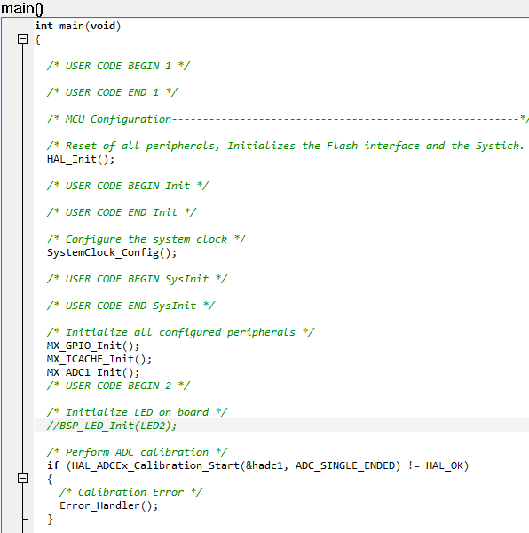 |
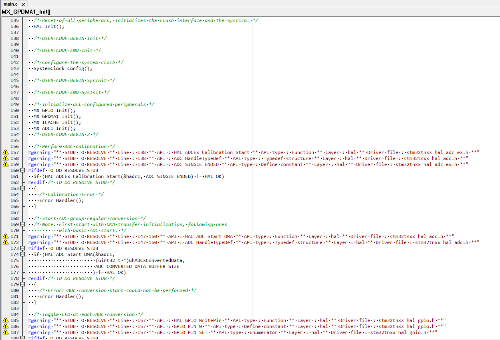 |


Build log after stubbing ¶
After completing the IDE settings update, running the HAL detection, and stubbing script, it is recommended to compile the project and check that there are no compilation error and there are a set of warning reflecting the stubbed HAL1 APIs that require migration.

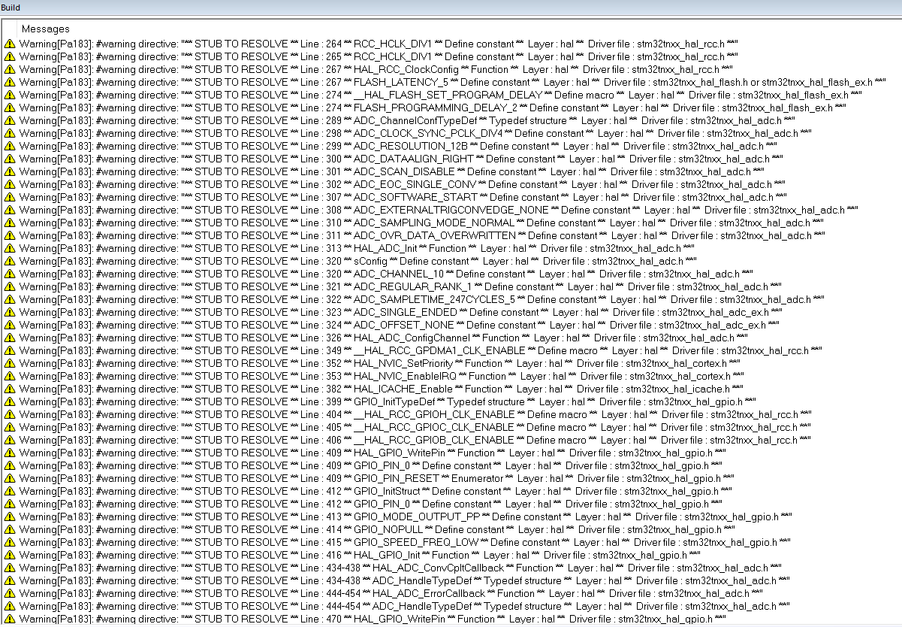
All HAL1 functions, structures, enumerations, constants, and macros used in the application files are stubbed using a compilation flag.
For each stubbed code, compilation warnings are added to indicate in the IDE console all stubbed APIs.
The generated log file list in details all stubbed code by referring to the conresponding section within the documentation.
|
Before stubbing |
After stubbing |
|---|---|
ADC_HandleTypeDef hadc1;
|
#warning "** STUB TO RESOLVE ** Line : 60 ** API : ADC_HandleTypeDef ** API type : Typedef structure ** Layer : hal ** Driver file : stm32tnxx_hal_adc.h **"
#ifdef TO_DO_RESOLVE_STUB
ADC_HandleTypeDef hadc1;
#endif /* TO_DO_RESOLVE_STUB */
|
if (HAL_ADCEx_Calibration_Start(&hadc1, ADC_SINGLE_ENDED) != HAL_OK)
{
/* Calibration Error */
Error_Handler();
}
|
#warning "** STUB TO RESOLVE ** Line : 138 ** API : HAL_ADCEx_Calibration_Start ** API type : Function ** Layer : hal ** Driver file : stm32tnxx_hal_adc_ex.h **"
#warning "** STUB TO RESOLVE ** Line : 138 ** API : ADC_HandleTypeDef ** API type : Typedef structure ** Layer : hal ** Driver file : stm32tnxx_hal_adc.h **"
#warning "** STUB TO RESOLVE ** Line : 138 ** API : ADC_SINGLE_ENDED ** API type : Define constant ** Layer : hal ** Driver file : stm32tnxx_hal_adc_ex.h **"
#ifdef TO_DO_RESOLVE_STUB
if (HAL_ADCEx_Calibration_Start(&hadc1, ADC_SINGLE_ENDED) != HAL_OK)
#endif /* TO_DO_RESOLVE_STUB */
{
/* Calibration Error */
Error_Handler();
}
|
Resolve HAL1 detected and stubbed references ¶
Generated log ¶
After the execution of the automatic detection and stubbing script, a log file is generated under
STM32Cube_SW_Package_H7P_2.0.0/stm32h7pxx_drivers/migration_tools/hal_detection_stubbing_script_log
.

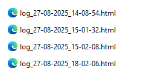
Open the log file generated to start resolving stubbed HAL1 references by clicking on the documentation link of each stubbed HAL API.

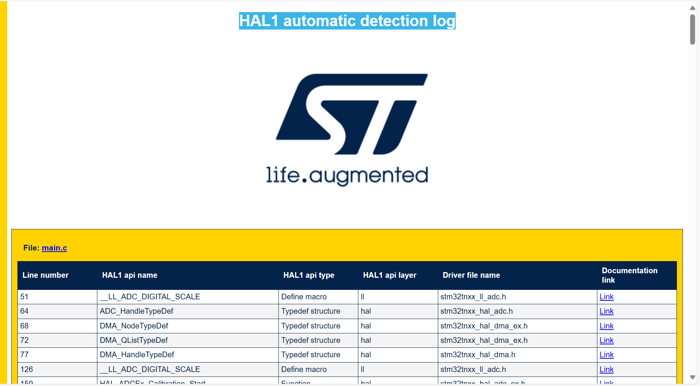
Resolve ADC_HandleTypeDef Structure ¶
Replace the stubbed ADC_HandleTypeDef structure with the new typedef naming in the generated project folder in mx_adc1.c file.
For more details about generated peripherals, refer to Generated Linker, startup, system, hal conf, external env files and drivers
Note
Replace only ADC_HandleTypeDef with hal_adc_handle_t without static .
Important
-
After replacing the new structure in the project, replace #warning message, #ifdef and #endif within applicative file.
-
The same after resolution of each stubbed code.
-
All commented #warning message, #ifdef and #endif shall be removed after completing the resolve of overall applicative file
|
Stubbed structure |
Resolved structure |
|---|---|
|
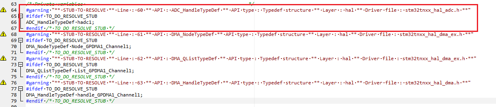 |
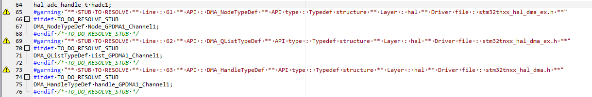 |


Resolve HAL_ADCEx_Calibration_Start function ¶
Check the ADC Functions Migration document in the HAL Migration Guide and resolve the function as shown.
refer to HAL_ADCEx_Calibration_Start .

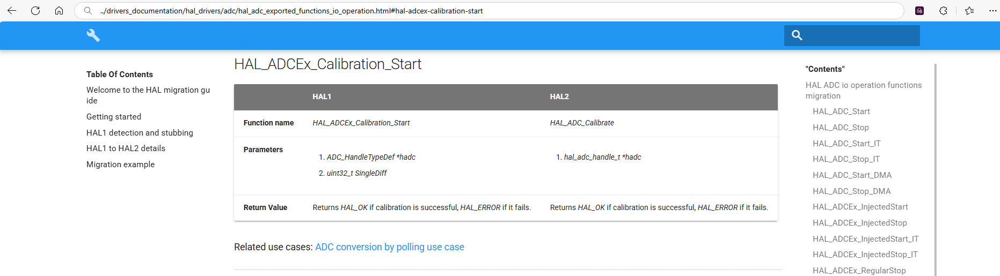
|
Stubbed function |
Resolved function |
|---|---|
|
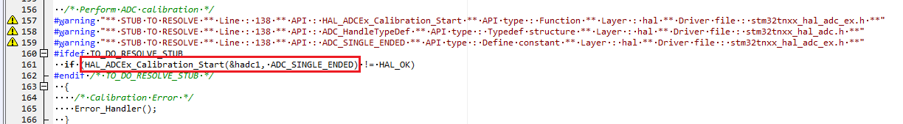 |
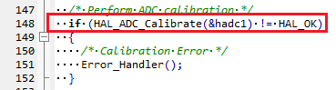 |


Resolve all functions, structures, enumerations, macros and constants in the project.
Resolved project ¶
|
Stubbed project |
|
|
Resolved project |
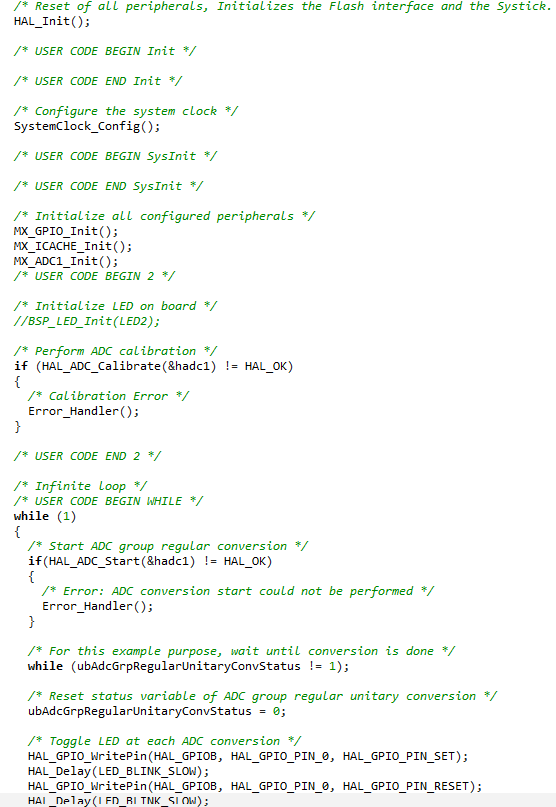 |

|
After stubbing |
Resolved project |
|---|---|
|
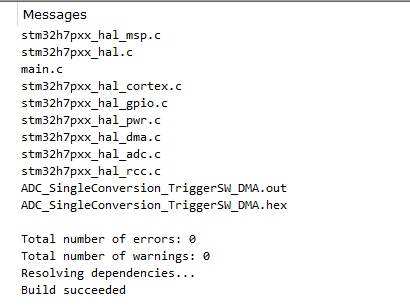 |